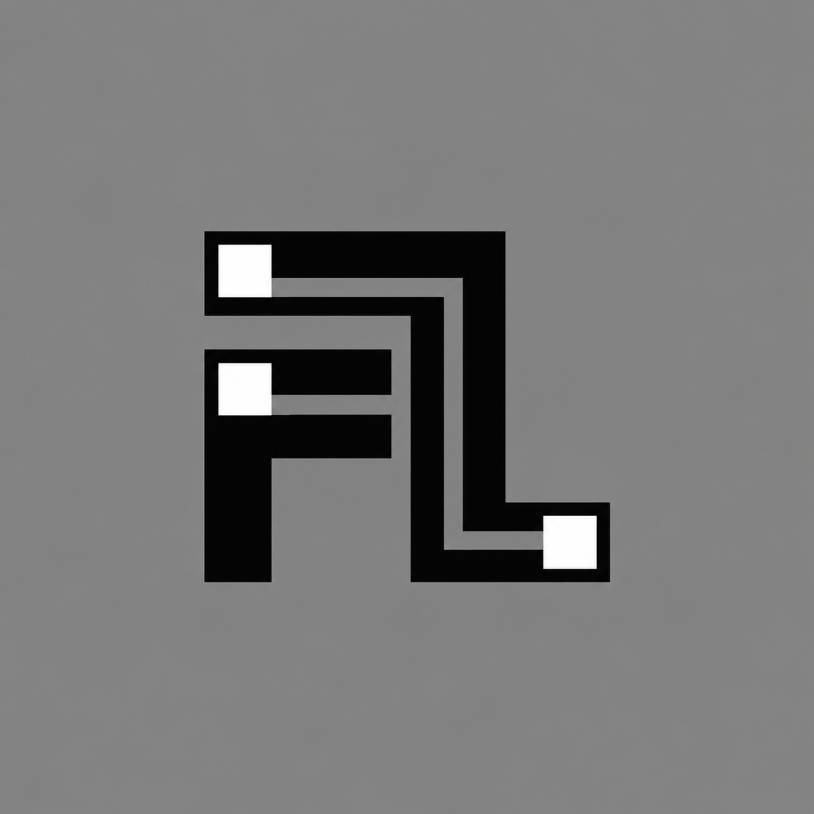
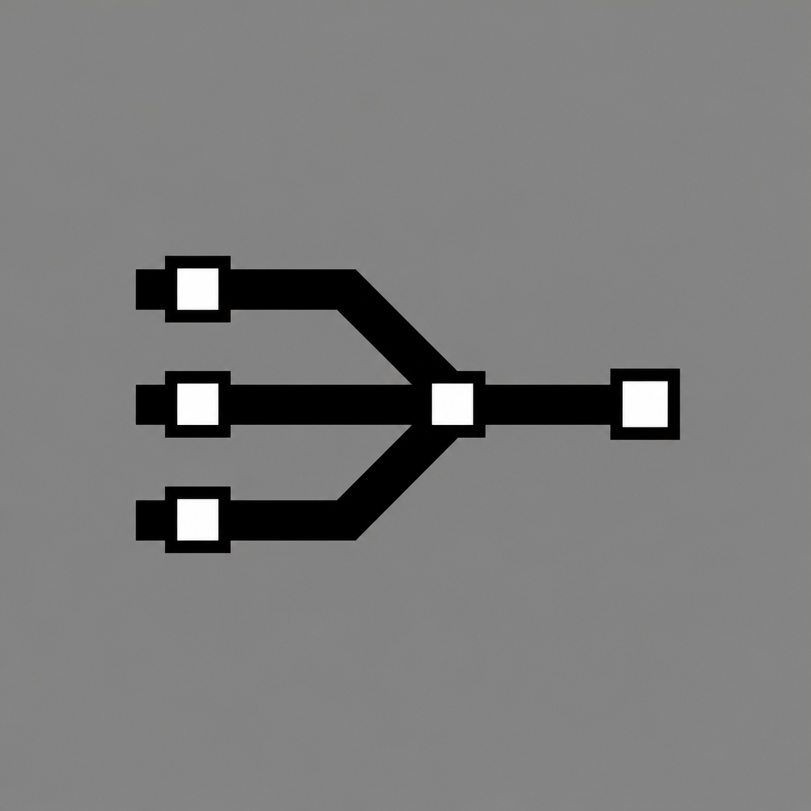
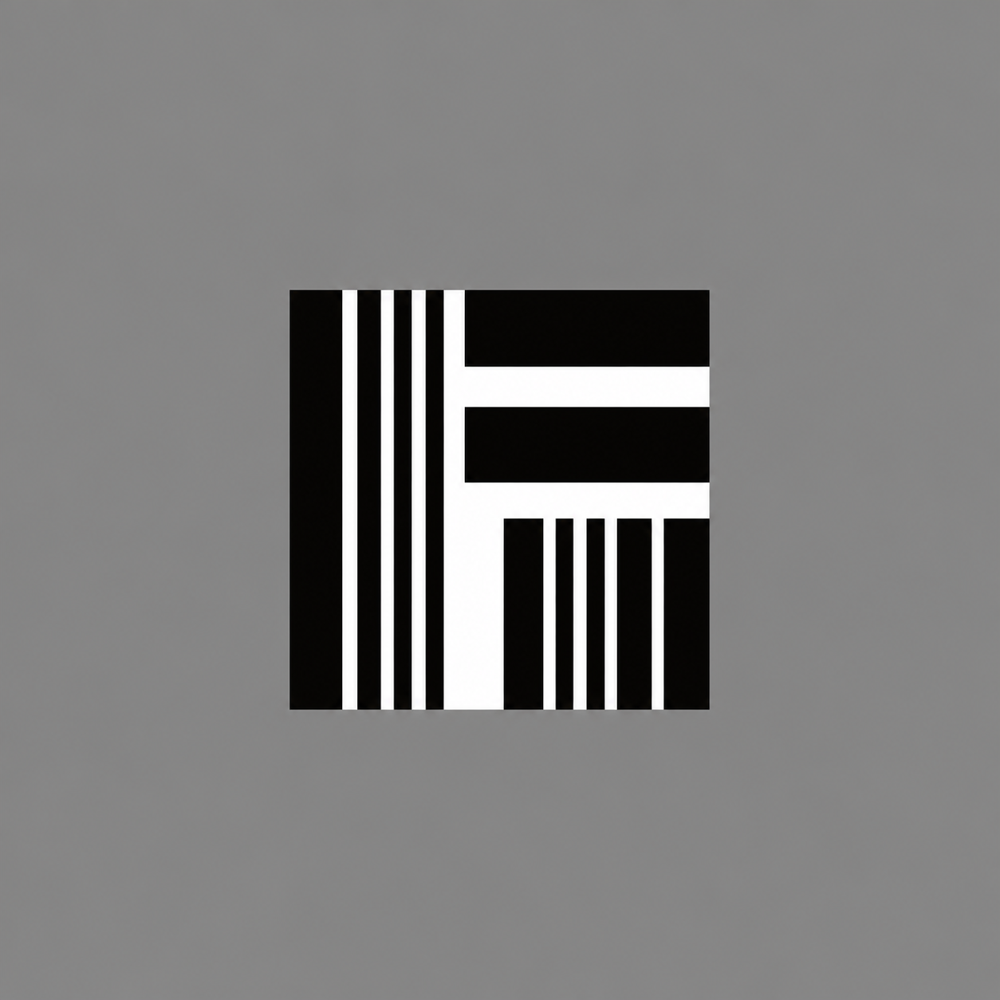
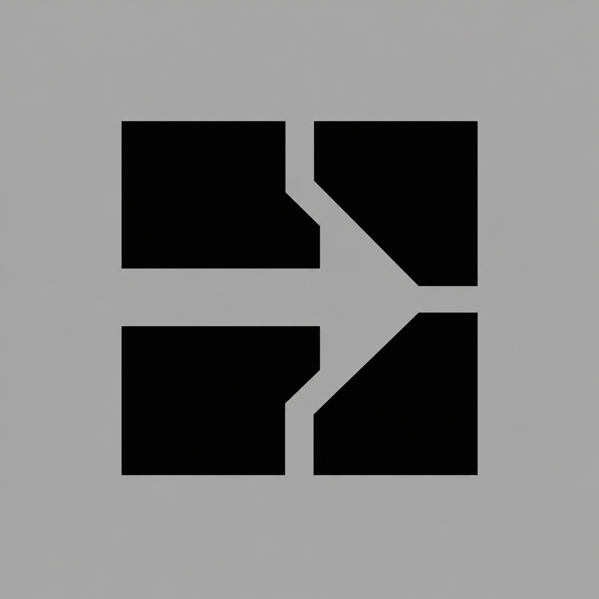
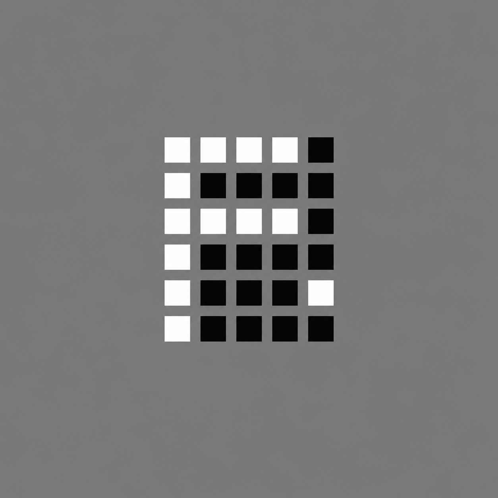
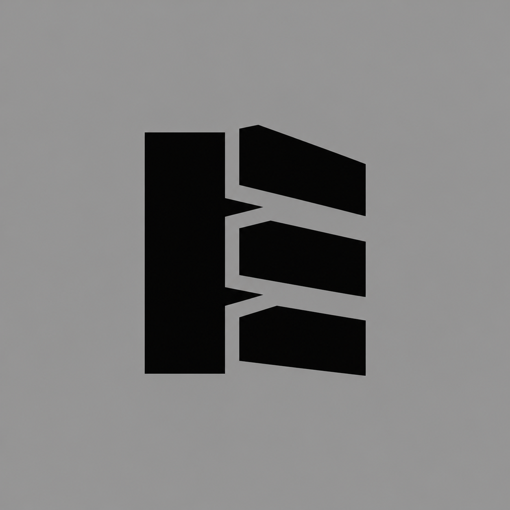

The most conventional route: a tight FL built from two heavy rail-like strokes. Strong when the product needs to feel established and unmistakably named.
WHITE / DARK

BLACK / LIGHT

Six new, independent logo systems — not monochrome versions of the colored bar mark. Each is supplied as a light and dark vector mark plus a standalone Archivo lockup.
The most conventional route: a tight FL built from two heavy rail-like strokes. Strong when the product needs to feel established and unmistakably named.


Three carrier lanes become one resolved route — a direct diagram of agents, documents and approvals converging on a decision.

A barcode-derived F speaks to invoices and rate sheets without leaning on a literal freight icon. It feels operational, document-native and compact.


Four hard dock modules create a single directional channel in the gaps. It is the most abstract, hardware-like option in the set.

A command-console F built on a square-dot grid, with one remote event dot. It connects naturally to the product’s agent and monitoring layer.

A structural loading spine and three staggered bays. The least letter-like direction; it has a practical, physical freight character.
